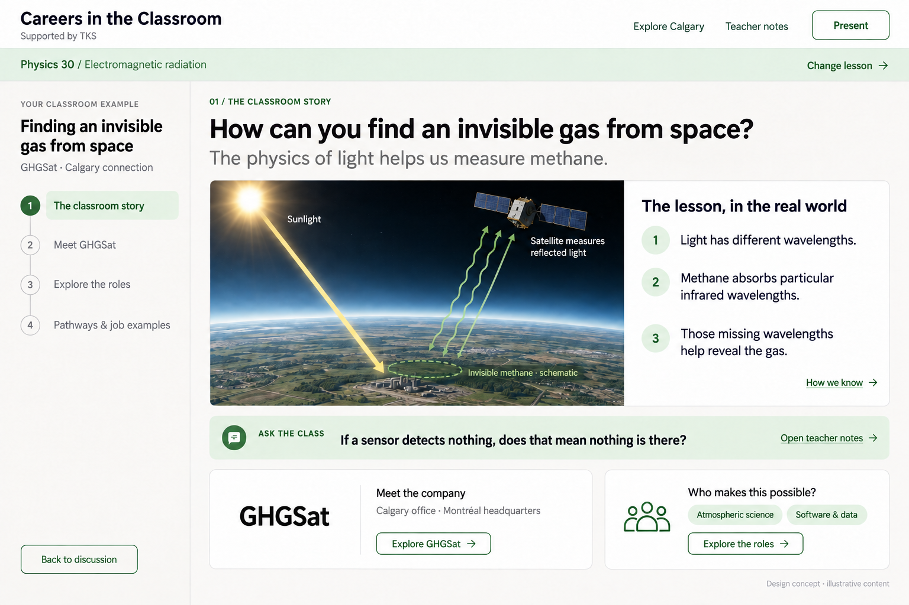

Start with the classroom story
A visual explanation and discussion prompt, with natural entry points into the company and its work.

Made with ChatGPT Images. These are visual concepts; controls inside the images are not functional. Photography, diagrams, and job examples are illustrative. Generation prompts · Illustration refinement